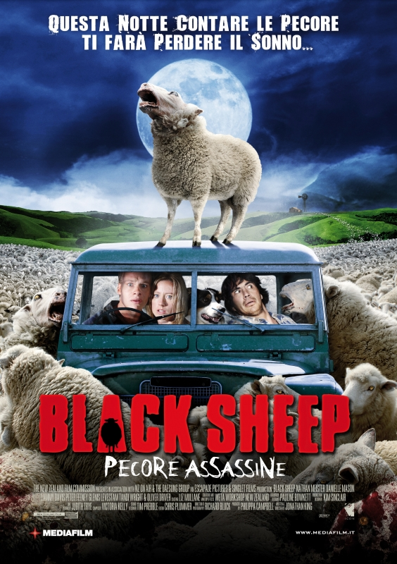

Titolo: Black Sheep
Anno: 2006
Regia: Jonathan King.
Interpreti: Nathan Meister, Danielle Mason, Tammy Davis, Peter Feeney,
Matthew Chamberlain, Oliver Driver, Tandi Wright, Mick Rose.
Durata: 87 min
Trama:
Nuova Zelanda. Henry Oldfield ha un trauma nel suo passato. Il fratello Angus, quando erano poco più che bambini,
un giorno uccise una pecora e ne indossò il vello sanguinante per spaventarlo. Quella paura, legata anche a un
doloroso avvenimento, è rimasta nell'intimo dell'ormai uomo Henry che torna dopo 15 anni di assenza alla fattoria
ormai saldamente nelle mani del fratello. Il quale ha assoldato una scienziata perché proceda a esperimenti
genetici mai tentati prima sulle pecore.
Quando Grant e la sua amica Experience, due animalisti convinti, riescono a entrare in possesso di uno degli
agnelli sottoposti a sperimentazione l'orrore ha inizio. Grant viene infatti morso dall'animale e ha inizio la
sua trasformazione in ovino carnivoro. Ben presto l'epidemia si diffonde e il numero delle pecore assetate di
sangue si fa elevato. Toccherà proprio ad Henry, vincendo la sua fobia, a Experience e al fattore Tucker cercare
di contrastare la loro ferocia.
Soffia un buon vento dalla Nuova Zelanda se, dopo il famosissimo Peter Jackson, ci viene offerta l'opera prima
di un regista che certamente si ispira al fratello cinematograficamente maggiore e ai suoi primi film ma che sa
anche trovare una propria cifra stilistica.
Jonathan King (pura e semplice coincidenza di cognome con il Maestro dell'horror contemporaneo) dimostra di
saper padroneggiare il genere mescolando con maestria il gore, il ribaltamento di ruoli
(la pecora che diventa lupo) riuscendo anche a sfiorare il grottesco consapevolmente e senza
mai perdere di vista la tensione narrativa.
Gli omaggi più o meno espliciti a tipologie di genere consolidate si fondono con un j'accuse nei
confronti della scienza che stravolge le regole della Natura che rimane negli occhi e nella mente (d'ora
in avanti guarderete pecore e affini con altri occhi) senza che ci sia mai il benché minimo accenno
predicatorio o moraleggiante. La pecora Dolly ha senz'altro un diritto di primogenitura per quanto riguarda
lo script ma King ha saputo tosarla a dovere per produrre una lana di buona qualità.
Commenti: